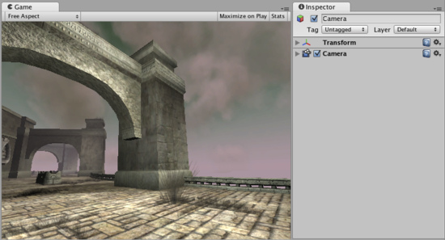
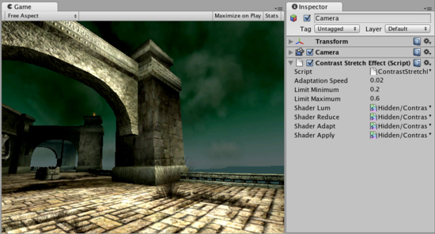
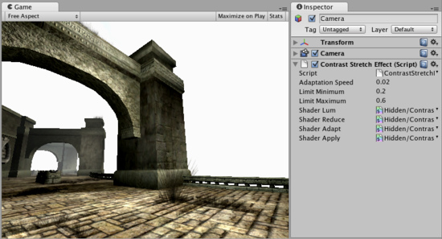

Contrast Stretch image effect
Contrast Stretch dynamically adjusts contrast of the image based on its brightness. It does that with a delay, so when going out of a dark tunnel the player can be almost blinded by bright outdoor light. And vice versa - when changing from a bright scene to a dark one, the eye takes some time to adapt.
Like all image effects, Contrast Stretch is only available in Pro version of Unity. Make sure to have the Pro Standard Assets installed.

No Contrast Stretch applied.
No Contrast Stretch applied.

Contrast stretch applied with a dark skybox. Note that buildings get brighter.
Contrast stretch applied with a dark skybox. Note that buildings get brighter.

Contrast stretch applied with a very bright skybox. Note that buildings get darker.
Contrast stretch applied with a very bright skybox. Note that buildings get darker.
Properties
| Adaptation Speed | The speed of the transition. The lower this number, the slower the transition |
| Limit Minimum | The darkest overall contrast value that the Camera will be adjusted to |
| Limit Maximum | The brightest overall contrast value that the Camera will be adjusted to |
Tips:
- Contrast Stretch only works while in play mode because it's time based.
Hardware support
Contrast stretch works only on graphics cards with support for pixel shaders (2.0). E.g. GeForce FX 5200 or Radeon 9500 and up. All image effects automatically disable themselves when they can not run on an end-users graphics card.